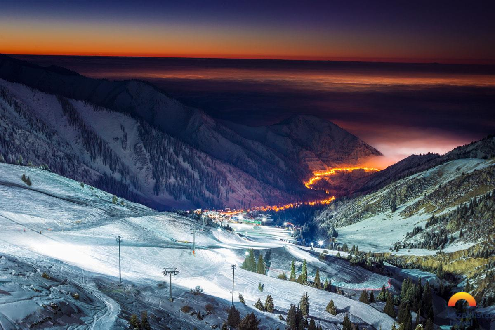
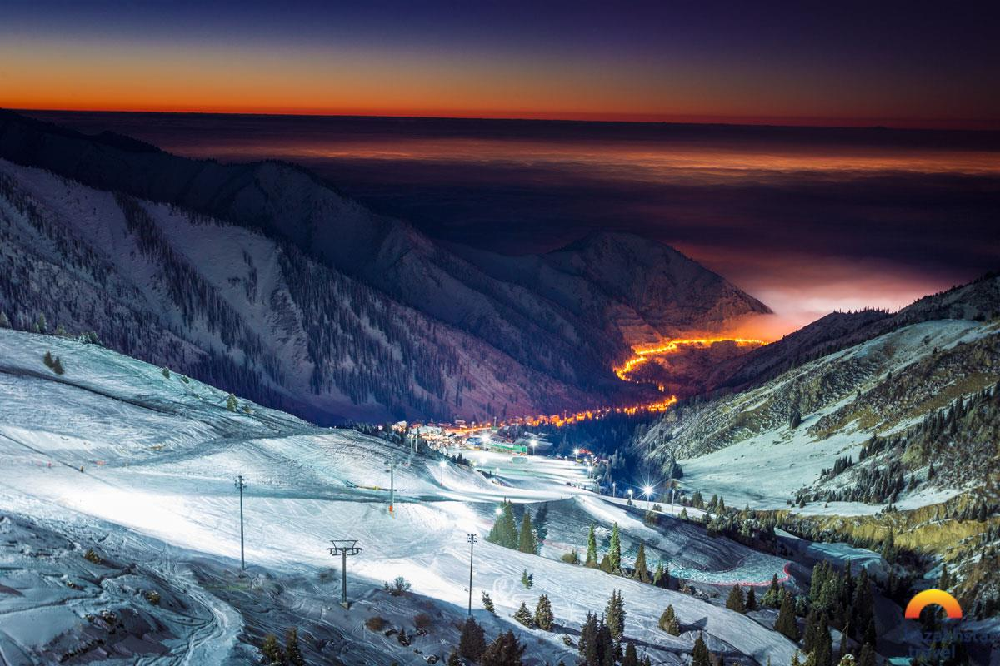
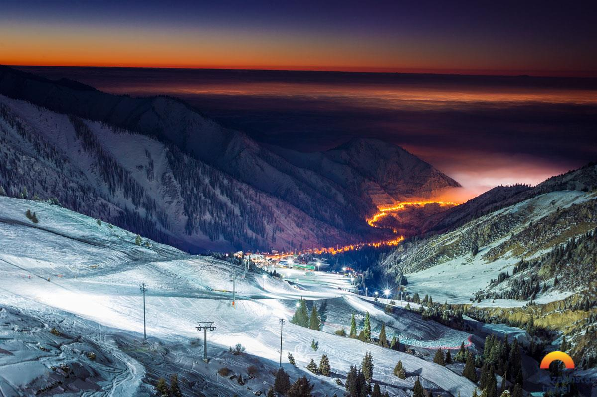

Almaty website
Other page on my website
Almaty (Alma-Ata) is one of the most ancient cities in the Central Asia that its establishment goes back to the 1000–900 BC in the Bronze Age when the first farmers and cattle-breeders established settlements on its territory. During the Saka period (from 700 BC to the beginning 1st AD), these lands were residence of Saka tribes and later Wusun tribes who inhabited the territory north of the Tian Shan mountain range. Evidence of these times can be found in the numerous burial mounds (tumuli) and ancient settlements, especially the giant burial mounds of the Saka tsars. There are several famous archaeological finds such as the "Golden man" from the Issyk Kurgan, the Zhalauly treasure, the Kargaly diadem, and the Zhetysu arts bronzes. [source]
